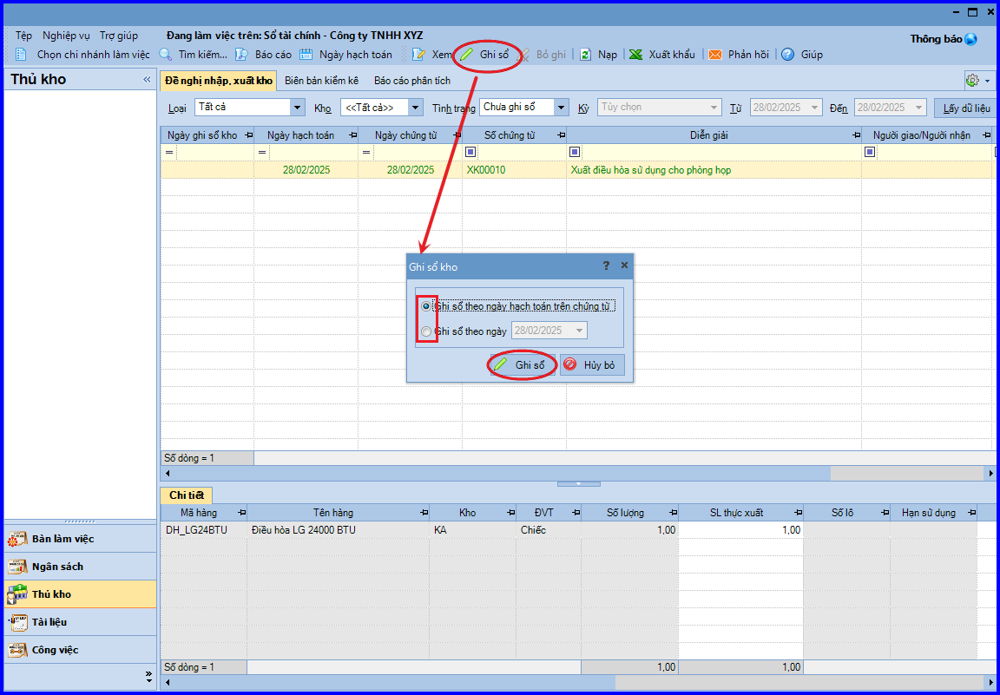
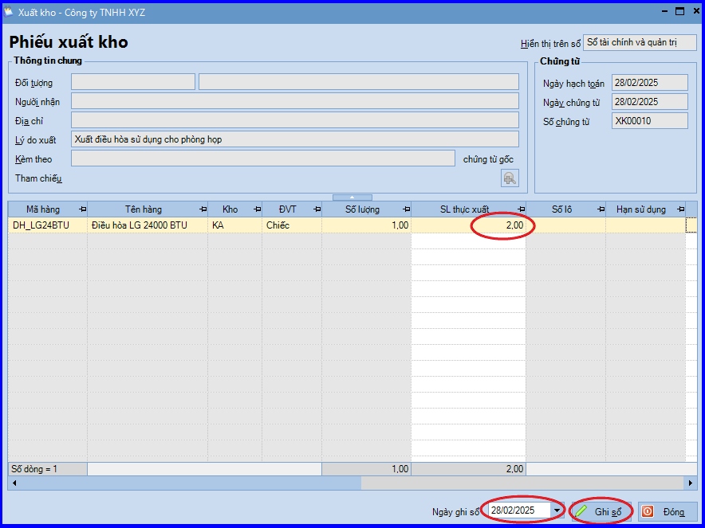
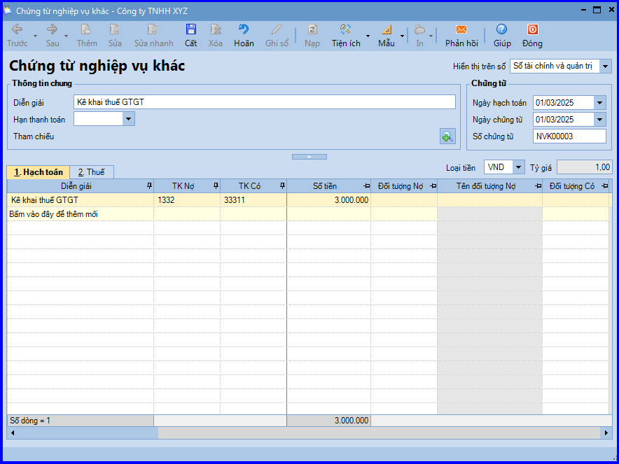
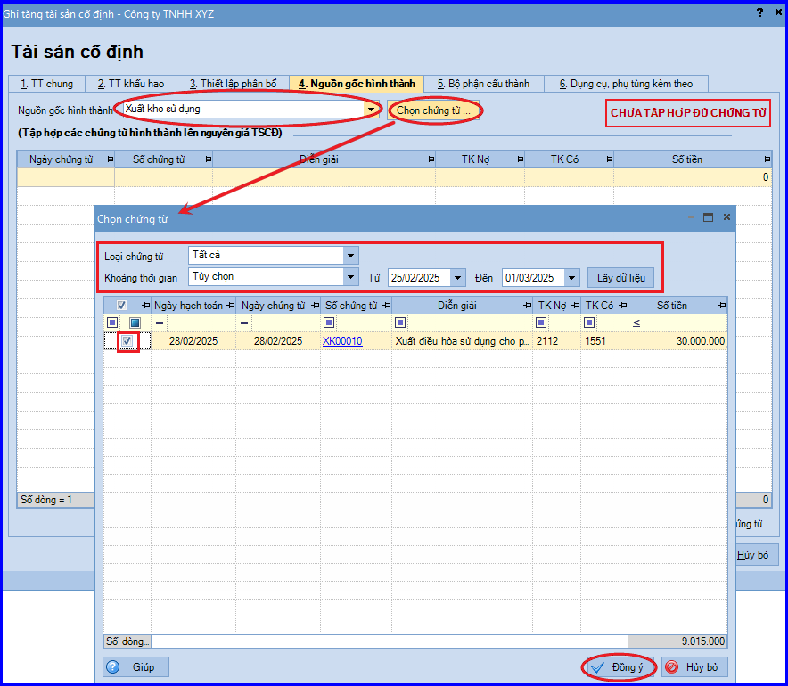

Hướng dẫn cách hạch toán ghi sổ nghiệp vụ xuất kho hàng hóa, thành phẩm làm tài sản cố định trên phần mềm Misa
Khi phát sinh nghiệp vụ xuất kho thành phẩm đưa vào sử dụng ghi tăng TSCĐ sẽ phát sinh các hoạt động sau:
- Căn cứ vào nhu cầu sử dụng đơn vị, bộ phận có nhu cầu nghị xuất thành phẩm sử dụng
- Kế toán kho lập Phiếu xuất kho, sau đó chuyển Kế toán trưởng và Giám đốc ký duyệt
- Căn cứ vào Phiếu xuất kho, Thủ kho xuất kho hàng hoá
- Thủ kho ghi sổ kho, còn kế toán ghi sổ kế toán kho.
- Kế toán tài sản lập biên bản giao nhận tài sản và thực hiện bàn giao cho bộ phận sử dụng.
- Các bên liên quan ký vào biên bản giao nhận tài sản, sau đó chuyển cho kế toán tài sản lưu và ghi tăng tài sản cố định
1. Cách hạch toán xuất kho hàng hóa, thành phẩm làm TSCĐ
a. Xuất kho hàng hóa, thành phẩm để chuyển hoặc chế tạo thành tài sản cố định
- Nợ TK 211 - Nguyên giá tài sản cố định hữu hình
- Có TK 155 - Thành phẩm (xuất kho ra sử dụng)
- Có TK 154 - Chi phí sản xuất, kinh doanh dở dang (Sản xuất xong đưa vào sử dụng ngay, không qua kho)
b. Chi phí lắp đặt, chạy thử… liên quan đến tài sản cố định
- Nợ TK 211 - Nguyên giá tài sản cố định hữu hình
- Có TK 111, 112, 331 …
2. Các bước hạch toán ghi sổ nghiệp vụ xuất kho hàng hóa, thành phẩm làm TSCĐ trên phần mềm Misa
Vai trò Kế toán kho
Sẽ hạch toán nghiệp vụ xuất kho thành phẩm được đưa vào sử dụng làm TSCĐ.
- Vào phân hệ "Kho" => chọn tab "Nhập, xuất kho" => chọn chức năng "Thêm\Xuất kho".
- Chọn loại phiếu xuất kho là "Khác" (Xuất sử dụng, góp vốn …).
.png)
- Khai báo chứng từ xuất kho, sau đó ấn "Cất".
- Các bạn ấn chọn chức năng "In" trên thanh công cụ, sau đó chọn mẫu phiếu xuất kho cần in.
Vai trò Thủ kho
Sẽ tiếp nhận yêu cầu xuất kho thành phẩm, hàng hóa, đồng thời thực hiện ghi sổ kho.
- Vào với vai trò Thủ kho => chọn tab "Đề nghị nhập, xuất kho".
- Chọn chứng từ xuất kho thành phẩm đưa vào sử dụng làm TSCĐ và ấn "Ghi sổ".
- Lựa chọn cơ chế ghi sổ và ấn "Ghi sổ" => Hệ thống sẽ tự động chuyển thông tin của chứng từ vào các báo cáo tồn kho liên quan của thủ kho.

Lưu ý: Trường hợp số lượng thực xuất khác với số lượng yêu cầu trên phiếu xuất kho, thực hiện như sau:
+ Chọn chứng từ xuất kho trên danh sách, sau đó ấn "Xem".
+ Nhập lại SL thực xuất.
+ Nhập Ngày ghi sổ, sau đó ấn "Ghi sổ".

Vai trò Kế toán thuế hoặc Kế toán bán hàng
Sẽ thực hiện kê khai thuế GTGT như sau:
- Vào phân hệ "Tổng hợp" => chọn tab "Chứng từ nghiệp vụ khác".
- Chọn chức năng "Thêm\Chứng từ nghiệp vụ khác".
- Hạch toán chứng từ kê khai thuế GTGT.

- Các bạn ấn "Cất".
Vai trò Kế toán tài sản
Thực hiện ghi tăng TSCĐ vào "Sổ tài sản".
Lưu ý: Tại tab "Nguồn gốc hình thành", kế toán sẽ chọn nguồn gốc hình thành là "Xuất kho sử dụng". Đồng thời tập hợp các chứng từ hình thành nên nguyên giá TSCĐ.

KẾ TOÁN DIỆU TÂM chúc các bạn làm tốt!
=============================
Nếu bạn muốn thành thạo các kỹ năng làm kế toán trên phần mềm Misa
Thì bạn có thể tham khảo "Khóa Học Thực Hành Kế Toán Trên Phần Mềm Misa" tại Công ty đào tạo Kế Toán Diệu Tâm
Trong khóa học này, bạn sẽ được dạy cách lên sổ sách, lập báo cáo tài chính trên phần mềm Misa
Chi tiết về chương trình đào tạo bạn xem tại đây nhé: Khóa học thực hành kế toán trên Misa
=============================
=============================
Nếu bạn muốn thành thạo các kỹ năng làm kế toán trên phần mềm Misa
Thì bạn có thể tham khảo "Khóa Học Thực Hành Kế Toán Trên Phần Mềm Misa" tại Công ty đào tạo Kế Toán Diệu Tâm
Trong khóa học này, bạn sẽ được dạy cách lên sổ sách, lập báo cáo tài chính trên phần mềm Misa
Chi tiết về chương trình đào tạo bạn xem tại đây nhé: Khóa học thực hành kế toán trên Misa
=============================